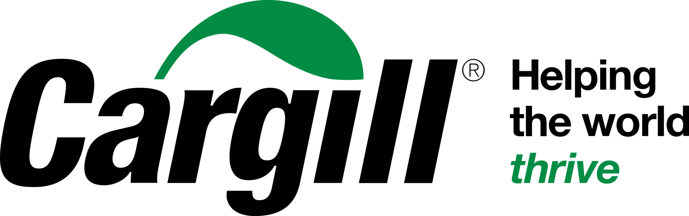
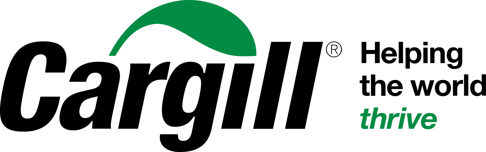

Modern farming technology
AgroPuls3 is a modern farming technology company that uses drones, AI, and data to help farmers increase crop yields and reduce costs.
How we help farmers
We combine the latest advances in artificial intelligence, robotics, and remote sensing to give you the information and tools you need to make better decisions and optimize your operations.
Aerial Intelligence
Our drones take high-resolution images of your fields. We use AI to analyze these images and identify issues like pests, diseases, and nutrient deficiencies.
Data-driven insights
We provide you with detailed reports and recommendations based on our analysis of the drone imagery and other data sources (e.g., weather, soil, historical yield).
Precision application
We can use our drones to apply inputs like fertilizer and pesticides with precision, reducing waste and environmental impact.
Crop health monitoring
We monitor your crops throughout the growing season and provide regular updates on their health and growth. We can also help you track the effectiveness of different management practices.
Trusted by leading farms and growers

 

Ready to grow smarter?
Start a conversation with our team or check out our latest insights on the AgroPuls3 blog.